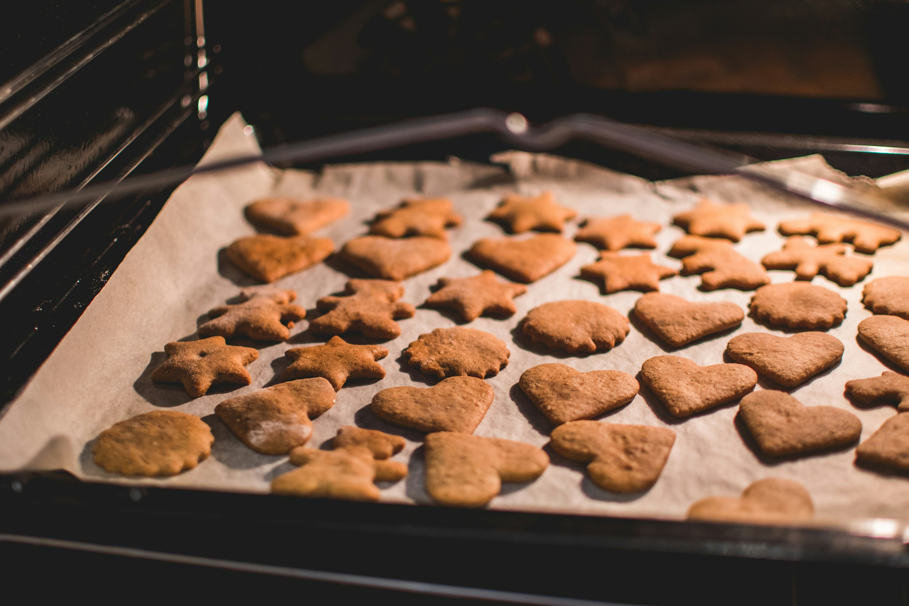

Home
Gingerbread Cookies

Ingredients for the dough
- Flour — 200 g (a little over 1 cup)
- Corn starch (optional) — 20 g (2 and a half tablespoons)
- Softened butter, coconut oil — 50 g (3 and a half tablespoons) , or vegetable oil — 35 ml (2 and a half tablespoons)
- Egg — 1 piece
- Honey — 40 g (2 tablespoons) or sugar — 100 g (half a cup)
Ground spice mix (optional)
- Cinnamon — 40 g (5 tablespoons) for Christmas gingerbread or 15 g (2 tablespoons) for classic gingerbread
- Cardamom pods (optional) — 8 g (50 pods). Remove the seeds from the pods
- Ground or freshly grated ginger (optional) — 8 g (2 level tablespoons)
- Cloves (optional) — 8 g (2 level tablespoons)
- Anise or star anise (optional) — 5 g (4 large pieces or 5-6 medium/small)
- Coriander (optional) — 2 g (2 level teaspoons)
- Nutmeg (optional) — 0.5 g (half a teaspoon)
- Saffron (optional) — 0.1 g (5 threads)
- Black pepper (optional) — 1 g (1 level teaspoon)
- Ground sweet paprika (optional) — 1 g (1 level teaspoon)
Ingredients for the icing (optional)
- Egg white — 1 piece
- Powdered sugar — 200 g (1 and a half cups)
- Lemon juice — half a teaspoon
Directions
- Mix all the dough ingredients together, adding the ground spices if desired.
If the mixture isn't moist enough, add another egg or a few tablespoons of water.
- Cover the dough with plastic wrap and place it in the refrigerator for 1 hour (optional).
- Roll out the dough. Use a cookie cutter to cut out the cookies (optional). Or form small gingerbread cookies by hand.
- Bake in a preheated oven at 180°C for 15-20 minutes.
- Whisk the icing ingredients together if you choose to glaze the cookies. Then apply the icing to the fully cooled gingerbread cookies in any style you like — spread it or pipe decorative designs.